Mục tiêu học tập
Sau Chương 13, bạn cần làm được từng điều dưới đây. Nhãn cho biết nội dung nằm ở mục nào.
- 13Giải thích đặc điểm định nghĩa của hoang mạc và phân biệt ba nhóm hoang mạc chính.
- 13.1Giải thích các yếu tố địa lý, vĩ độ, hoàn lưu khí quyển và hiệu ứng Coriolis ảnh hưởng thế nào đến vị trí của hoang mạc.
- 13.2Liệt kê các quá trình phong hóa và xói mòn chính ở hoang mạc.
- 13.3Nhận biết các dạng địa hình hoang mạc.
- 13.3Giải thích các dạng địa hình hoang mạc được tạo thành bởi xói mòn và lắng đọng như thế nào.
- 13.3.1Mô tả các kiểu đụn cát chính và điều kiện hình thành chúng.
- 13.4Nhận biết các đặc điểm chính của hoang mạc Basin and Range (Hoa Kỳ).
Cách dùng tài liệu này
Các từ được gạch chân là thuật ngữ. Nhấn vào một từ, hoặc mở Thuật ngữ ở góc dưới bên phải, để đọc và tìm mọi định nghĩa của chương. Thuật ngữ được dịch sang tiếng Việt khoa học; thuật ngữ chưa thấy trong nguồn chính thức được ghi chú trong bảng thuật ngữ. Chương đi từ bầu trời xuống mặt đất: vì sao không khí khô ở nơi có hoang mạc (13.1), gió và nước hiếm hoi bào mòn đá hoang mạc thế nào (13.2), các địa hình và đụn cát chúng tạo nên (13.3), và hoang mạc của những bồn đứt gãy khối ở Bắc Mỹ (13.4).
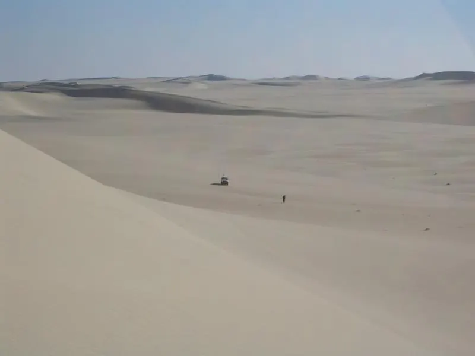
Khoảng 30% bề mặt đất liền () của Trái Đất là (sa mạc). Hoang mạc được định nghĩa bởi lượng thấp, không phải bởi nhiệt độ. Hoang mạc có nhiệt độ khắc nghiệt, nhưng đó là vì phía trên chứa ít hơi ẩm: độ ẩm thấp và ít mây. Không có mây che, mặt đất hấp thụ nhiều năng lượng Mặt Trời hơn vào ban ngày và tỏa nhiệt nhiều hơn vào ban đêm.
Hoang mạc không phân bố ngẫu nhiên. Có ba nhóm chính (Bảng 13.1):
| Nhóm | Nguyên nhân | Ví dụ |
|---|---|---|
| Hoang mạc cận nhiệt đới (theo vĩ độ) | Không khí khô giáng xuống ở khoảng 30° B và N; hoang mạc nằm trong khoảng 15°–30° (13.1.1) | Sahara (châu Phi), vùng nội địa Úc (Outback) |
| Gió thịnh hành mất hơi ẩm khi vượt qua dãy núi; không khí khô giáng xuống phía bên kia | Nội địa miền tây Bắc Mỹ (Great Basin), (Chile), Gobi (châu Á) | |
| Không khí quá lạnh, giữ được rất ít hơi ẩm, giáng xuống ở hai cực | Châu Nam Cực, phần lớn Bắc Cực |
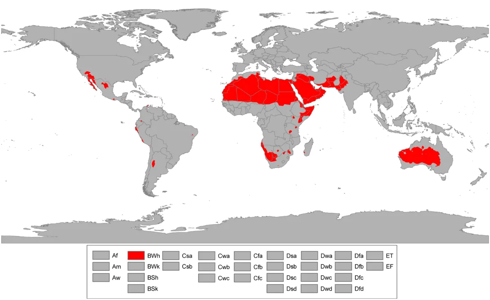
(bóng mưa) hình thành khi gió đẩy không khí lên và vượt qua núi (Hình 13.3). Áp suất không khí thấp hơn ở trên cao, nên không khí bốc lên giãn nở và lạnh đi. Không khí lạnh giữ được ít hơi ẩm hơn không khí ấm, nên hơi ẩm rơi xuống thành mưa hoặc tuyết ở sườn đón gió. Không khí giờ đã khô giáng xuống sườn khuất gió và để lại một vùng khô hạn, ít giáng thủy.

Ở các hoang mạc cực, những vùng rộng lớn của châu Nam Cực và Bắc Cực phủ băng tuyết, nhưng lượng giáng thủy trung bình hằng năm rất thấp. Vì vậy châu Nam Cực là lục địa khô nhất Trái Đất.
13.1Nguồn gốc của hoang mạc
Vị trí địa lý, hoàn lưu khí quyển và sự tự quay của Trái Đất là những nguyên nhân chính tạo nên hoang mạc.
13.1.1 Hoàn lưu khí quyển
Năng lượng Mặt Trời chuyển thành nhiệt là động lực của hoàn lưu không khí trong khí quyển và nước trong đại dương. Hoàn lưu mạnh hay yếu tùy vào lượng năng lượng bề mặt Trái Đất hấp thụ, và Trái Đất bị đốt nóng không đều, tùy theo hai góc:
- : các đường vòng quanh Trái Đất song song với xích đạo, đo bằng độ: 0° ở xích đạo, 90° B và 90° N ở hai cực.
- : góc mà tia nắng chiếu xuống mặt đất, đo từ phương vuông góc với mặt đất. Ở vùng nhiệt đới cả hai góc gần 0°, nên bề mặt nhận nhiều năng lượng Mặt Trời; ở hai cực cả hai góc tiến tới 90°, bề mặt nhận rất ít hoặc gần như không có năng lượng.
Giữa xích đạo và mỗi cực, không khí đảo lộn trong ba vòng hoàn lưu (Hình 13.5, Bảng 13.2):
- (trên vùng nhiệt đới): Mặt Trời đốt nóng không khí ở xích đạo và không khí bốc lên. Không khí bốc lên thì lạnh đi và trút hơi ẩm thành mưa nhiệt đới. Không khí đã khô tỏa về phía hai cực, gặp không khí khô của vòng Ferrel, và khối không khí khô hợp lại giáng xuống mặt đất ở gần vĩ độ 30°.
- , trong khoảng 30° đến 60°.
- , từ khoảng 60° đến cực, nơi không khí lạnh và khô giáng xuống.
Không khí khô giáng xuống tạo nên những đới chủ yếu là áp cao ở khoảng 30° B và 30° N, gọi là . Vì vậy các đới khô hạn, nơi điều kiện hoang mạc chiếm ưu thế, nằm trong khoảng 15° đến 30° về hai phía xích đạo. Không khí chảy sát mặt đất ra xa các đới này tạo nên gió thịnh hành: (gió mậu dịch) thổi về phía xích đạo và ở đới ôn hòa (13.1.2 giải thích hướng của chúng).
| Vòng | Vĩ độ | Không khí bốc lên ở | Không khí giáng xuống ở | Gió bề mặt |
|---|---|---|---|---|
| Hadley | 0°–30° | Xích đạo (mưa nhiệt đới) | 30° (vĩ độ ngựa; hoang mạc nóng) | Gió tín phong |
| Ferrel (vĩ độ trung bình) | 30°–60° | 60° | 30° | Gió tây ôn đới |
| Cực | 60°–90° | 60° | Cực (áp cao cực; hoang mạc cực) | Gió đông cực* |
*Chương chỉ gọi tên gió tín phong và gió tây; "gió đông cực" là tên chuẩn dùng trong hình hoàn lưu của NASA mà chương sử dụng.
Những hoang mạc khác có nguồn gốc ít nhất một phần từ các hiện tượng khác. , trải trên một phần Utah và Nevada, chịu ảnh hưởng phần nào của không khí giáng xuống trong hoàn lưu toàn cầu, nhưng chủ yếu là một hoang mạc khuất mưa. Không khí ẩm theo gió tây từ Thái Bình Dương bốc lên qua dãy Sierra Nevada và các dãy núi khác, lạnh đi và mất hơi ẩm ở phía đón gió (Hình 13.6).
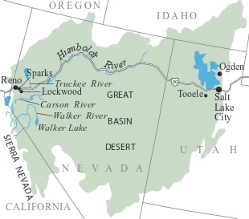
Một trong những nơi khô nhất Trái Đất là hoang mạc Atacama ở bắc Chile, một dải đất dọc bờ biển phía bắc vĩ độ khoảng 30° N, ở rìa nam của đới gió tín phong. Ba yếu tố kết hợp ở đây:

Ba yếu tố
- Vĩ độ: nằm trong đới khô của không khí giáng xuống.
- Vùng khuất mưa: gió tín phong thổi về phía tây mang không khí ấm, ẩm qua lưu vực Amazon. Tới dãy Andes, không khí bốc lên, lạnh đi và trút phần lớn nước thành mưa; không khí khô, mát sau đó giáng xuống Atacama ở phía tây dãy núi.
- Hải lưu lạnh: gió từ Thái Bình Dương thổi vào bờ bị hải lưu Peru (Humboldt) làm lạnh, và không khí lạnh này giữ được rất ít hơi ẩm.
Một số nơi ở Atacama không đo được giáng thủy trong nhiều năm liền. Đây là nơi khô nhất Trái Đất ngoài vùng cực.

Hoang mạc cực
Vùng cực cũng là những đới chủ yếu là áp cao, do không khí lạnh và khô giáng xuống trong các vòng hoàn lưu cực. Không khí lạnh giữ ít hơi ẩm hơn nhiều so với không khí ấm, nên không khí cực giáng xuống tạo nên hoang mạc cực. Vì vậy đất liền gần cực Bắc và cực Nam luôn rất khô.
13.1.2 Hiệu ứng Coriolis
Trái Đất quay về phía đông, nơi Mặt Trời mọc. Hãy nghĩ tới việc quay một quả nặng buộc vào sợi dây: tốc độ của quả nặng phụ thuộc vào độ dài sợi dây. Tương tự, tốc độ hướng đông của một điểm trên Trái Đất phụ thuộc vào khoảng cách từ điểm đó tới trục quay. Vĩ độ cao gần trục hơn nên di chuyển về phía đông chậm hơn vĩ độ thấp.
Khi không khí hoặc nước di chuyển từ vĩ độ thấp lên vĩ độ cao, nó giữ động lượng của vĩ độ nhanh hơn, nên di chuyển về phía đông nhanh hơn mặt đất bên dưới. Điều ngược lại xảy ra khi nó di chuyển về phía xích đạo. Sự lệch hướng chuyển động này, nhìn từ Trái Đất đang quay, là (Hình 13.9). Yếu tố thứ hai làm lệch chuyển động theo hướng đông–tây: hiệu ứng ly tâm do Trái Đất quay và trọng lực (kéo về tâm Trái Đất) không thẳng hàng, và với một khối di chuyển về phía đông, kết quả là một lực đẩy về phía xích đạo (khối di chuyển về phía tây bị đẩy về phía cực). Tổng độ lệch Coriolis của một khối di chuyển theo bất kỳ hướng nào là sự kết hợp của hai yếu tố này.

Các vòng hoàn lưu đưa không khí di chuyển theo hướng bắc–nam so với mặt đất, và hiệu ứng Coriolis làm lệch các khối khí này sang phải ở Bắc bán cầu và sang trái ở Nam bán cầu (Hình 13.10):
- Gió tín phong: trong vòng Hadley bắc, không khí tầng thấp chảy về phía nam tới xích đạo và bị lệch sang phải (về phía tây). Các thủy thủ châu Âu đã dùng gió tín phong này để vượt Đại Tây Dương tới Nam Mỹ và vùng Caribe. Ở Nam bán cầu, không khí chảy về xích đạo bị lệch sang trái, nên gió tín phong thổi về phía tây bắc.
- Gió tây ôn đới: trong vòng Ferrel bắc, không khí bề mặt chảy từ vĩ độ ngựa về phía cực Bắc và bị lệch sang phải (về phía đông), tạo nên gió tây. Ở Nam bán cầu, không khí chảy về phía cực bị lệch sang trái và thổi về phía đông nam.
- Vòng hoàn lưu cực: ở 60° B và N, không khí tương đối ấm hơn bốc lên, chảy về phía cực, lạnh đi, hội tụ ở cực và giáng xuống trong vùng áp cao cực. Không khí khô giáng xuống này tạo nên hoang mạc cực, nơi cái lạnh giữ cho băng tuyết tồn tại.

Hiệu ứng Coriolis tác động lên mọi chuyển động trên Trái Đất
- Pháo binh phải tính đến nó khi ngắm bắn ở cự ly xa.
- Các quay theo chiều kim đồng hồ ở Bắc bán cầu và ngược chiều ở Nam bán cầu (Học phần 12).
- Nó góp phần định hình các dòng tia cực ở trên cao, đôi khi đẩy những lưỡi không khí lạnh Bắc Cực xuống tới vĩ độ 30° thay vì 60° như thường lệ.
- Các hệ thống áp thấp và bão nhiệt đới xoáy ngược chiều kim đồng hồ ở Bắc bán cầu và theo chiều kim đồng hồ ở Nam bán cầu.

Xem: video về hiệu ứng Coriolis của chương (tiếng Anh) ↗ · Tự kiểm tra: câu hỏi Mục 13.1 trong sách ↗
13.2Phong hóa và xói mòn ở hoang mạc
ở hoang mạc diễn ra theo cùng các cách như ở những khí hậu khác (Học phần 5), chỉ chậm hơn. Nhiệt độ cao thường làm nhanh hơn, nhưng nước là tác nhân phong hóa chính, và thiếu nước làm chậm cả phong hóa cơ học lẫn hóa học. Giáng thủy thấp cũng có nghĩa là ít và ít hơn. Khi mưa rơi ở hoang mạc, mưa thường rất lớn và có thể gây , cuốn đi nhiều vật liệu rất nhanh (13.3).

Có một sản phẩm phong hóa chỉ có ở hoang mạc: (còn gọi là lớp gỉ đá). Đó là những lớp mỏng màu nâu sẫm gồm sét và sắt, mangan, hình thành trên những mặt đá rất ổn định trong môi trường khô hạn (Hình 13.13). Chương cho biết cơ chế hình thành chính xác vẫn chưa rõ; người ta đã đề xuất các cơ chế vũ trụ và sinh học (xem ghi chú kiểm chứng).
Gió, một tác nhân xói mòn
Nước vẫn là tác nhân chủ đạo ở phần lớn hoang mạc, nhưng gió là tác nhân phong hóa và xói mòn đáng kể ở nhiều hoang mạc. Gió mang trầm tích lơ lửng trong các trận , những cơn bão bụi lớn thường gặp ở hoang mạc. Trầm tích bụi do gió mang tới gọi là (loess). Hoàng thổ phủ những vùng rộng ở miền Trung Tây Hoa Kỳ; phần lớn là bột đá tan ra từ các trong gần nhất (Học phần 14), một phần được thổi tới từ các vùng hoang mạc ở miền Tây.
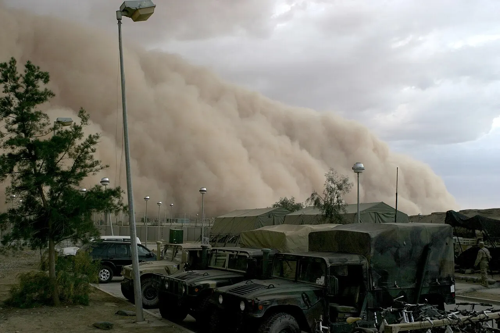
Gió có ít năng lượng hơn nước nhưng vẫn vận chuyển cát, bột và bụi. Giống như dòng chảy (Học phần 11), vật liệu mà một chất lưu mang theo chia thành và , tỷ lệ giữa hai phần tùy vào vận tốc gió. Gió vận chuyển trầm tích theo ba cách (Hình 13.15, Bảng 13.3):
| Quá trình | Cỡ hạt | Cách di chuyển |
|---|---|---|
| Bột và bụi (khoảng 70 µm trở xuống) | Bị nâng cao và mang đi xa, như trong bão bụi haboob; lắng xuống thành hoàng thổ | |
| Cát | Hạt bị nâng lên, mang đi một đoạn ngắn rồi rơi xuống, bắn tung các hạt khác, các hạt này lại nảy lên; một chuỗi lan truyền cao tới khoảng 1 m trên mặt đất | |
| Hạt thô hơn | Trượt hoặc lăn trên bề mặt khi gió đủ mạnh |
Vì các hạt nhảy cóc liên tục va vào nhau, hạt cát do gió mang thường tròn cạnh và có bề mặt mờ đục (Hình 13.16). Vật liệu lơ lửng tách khỏi cát gần mặt đất và bị mang đi thành bụi, nên gió là tác nhân hiệu quả: nó tách cát khỏi các hạt cỡ bụi (Học phần 5).

Đá trượt
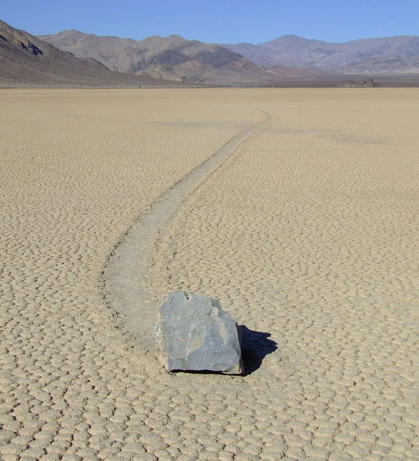
Một bí ẩn đã được giải
(đá di chuyển) là những tảng đá lớn di chuyển trên mặt phẳng hoang mạc, để lại vệt. Nổi tiếng nhất là ở Racetrack Playa, Death Valley. Nhiều năm liền người ta không giải thích được chuyển động của chúng. Các nghiên cứu quan sát và thực nghiệm gần đây, gồm đo chuyển động thực tế và tái tạo trong phòng thí nghiệm, cho thấy đá bị giữ trong những tấm băng mỏng và gió đẩy các tấm băng này trôi trên playa.
Đo đạc thực địa (Norris và cộng sự, 2014) cho thấy các tấm băng được đẩy bởi gió nhẹ; chương viết "gió mạnh". Xem ghi chú kiểm chứng.
Địa hình do cát mài
Đới cát nhảy cóc là tác nhân xói mòn mạnh: đá gốc và đá rời nằm trong đới này bị cát mài (Hình 13.18, Bảng 13.4).
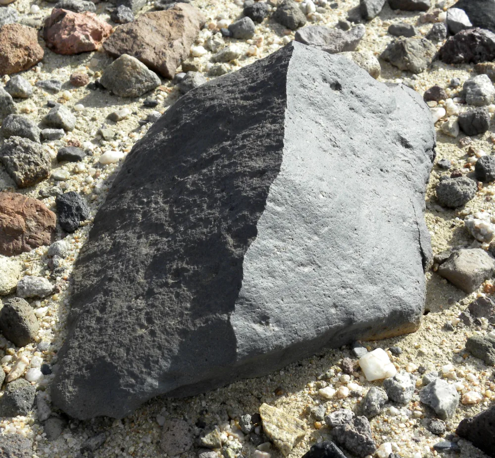
Đá gió màiHoang mạc Mojave gần Barstow, California. Mark A. Wilson, phạm vi công cộng. Đá bị mài thắt chânGần Salar de Uyuni, Bolivia. Thomas Wilken, CC BY-SA.
Đá bị mài thắt chânGần Salar de Uyuni, Bolivia. Thomas Wilken, CC BY-SA. Hố thổi mònTexas. Leaflet, CC BY-SA.
Hố thổi mònTexas. Leaflet, CC BY-SA.
| Dạng | Là gì | Hình thành thế nào |
|---|---|---|
| Khối đá gốc lộ ra có hình dạng do cát mài | Cát nhảy cóc mài mòn | |
| Tảng đá nằm trên mặt đất có các mặt bị mài và đánh bóng | Cát mài; khi hướng gió chính thay đổi, nhiều mặt nhẵn được tạo ra | |
| Một hố lòng chảo trong cát và bột | Các bụi thực vật giữ trầm tích; gió thổi đi phần vật liệu không được giữ giữa chúng |
Tự kiểm tra: câu hỏi Mục 13.2 trong sách ↗
13.3Địa hình hoang mạc
Ở tây nam Hoa Kỳ, các dòng chảy rời núi và đổ vào thung lũng, tạo nên một loạt dạng địa hình (Hình 13.19, Bảng 13.5):
- : khi dòng chảy ra khỏi hẻm núi hẹp, dòng nước không còn bị vách hẻm giữ lại và tỏa rộng ra. Trên sườn thoải hơn, nước chảy chậm lại và thả vật liệu thô. Khi vật liệu giống cuội kết này lấp đầy lòng dẫn, nó làm dòng chảy đổi hướng, nên dòng chảy chia thành một hệ phân lưu tỏa tia, giống như sông tạo khi đổ vào một vùng nước. Kết quả là một khối trầm tích hình nón quạt.
- : các nón phóng vật tiếp tục lớn và có thể nối với nón bên cạnh thành một dải dọc chân núi.
- (inselberg): khi núi bị bào mòn và trầm tích của nó tích tụ, trước tiên trong các nón rồi trong bajada, núi dần bị chôn vùi trong chính mảnh vụn của nó. Những phần sót lại còn nhô lên là núi sót, "núi đảo", được nhà địa chất người Đức Wilhelm Bornhardt (1864–1946) mô tả đầu tiên.
- : nơi thung lũng là một bồn kín, dòng chảy đổ vào không thoát ra được, nước chỉ mất đi do bốc hơi và hình thành một lòng hồ khô. Playa thuộc những dạng địa hình bằng phẳng nhất. Một playa có thể rộng lớn nhưng sau một trận dông lớn chỉ ngập sâu vài inch.
 Nón phóng vậtDeath Valley, California. USGS, phạm vi công cộng.
Nón phóng vậtDeath Valley, California. USGS, phạm vi công cộng.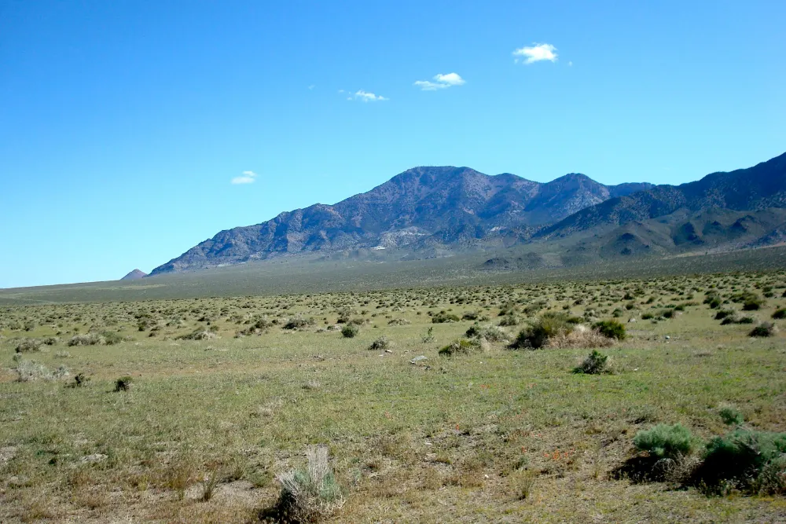
BajadaNúi Frisco, Utah. GerthMichael, CC BY-SA. Núi sótHoang mạc Mojave, California. USGS, phạm vi công cộng.
Núi sótHoang mạc Mojave, California. USGS, phạm vi công cộng. PlayaGần Dolan Springs, Arizona. NASA, phạm vi công cộng.
PlayaGần Dolan Springs, Arizona. NASA, phạm vi công cộng.
Những dạng địa hình này ghi lại quá trình "già đi" của cảnh quan hoang mạc (Hình 13.20): núi khối đứt gãy trẻ với đỉnh nhọn và các nón riêng rẽ ở cửa hẻm, rồi các bajada dọc chân núi, cuối cùng là những núi sót thấp nhô lên giữa một biển bajada hợp nhất. Một hành trình từ Wasatch Front ở Utah về phía tây nam tới Thái Bình Dương đi qua cả ba giai đoạn (13.4).
| Dạng địa hình | Vị trí | Hình thành thế nào |
|---|---|---|
| Nón phóng vật | Ở cửa hẻm núi | Dòng chảy tỏa rộng, chậm lại, thả vật liệu thô; các phân lưu tỏa tia đắp nên hình quạt |
| Bajada | Dọc chân núi | Các nón cạnh nhau lớn lên và nối thành một dải bồi tích |
| Núi sót | Nhô lên khỏi trầm tích lấp bồn | Núi bị bào mòn và chôn vùi trong chính mảnh vụn của nó; chỉ phần sót còn nhô lên |
| Playa | Đáy bồn kín | Nước không thoát được bốc hơi, để lại lòng hồ khô bằng phẳng |
Dòng chảy tạm thời và lũ quét
Hồ playa và các dòng chảy hoang mạc chỉ có nước sau mưa được gọi là . Vì dông ở hoang mạc rất dữ dội, dòng chảy tạm thời có thể mang một lượng nước lớn trong thời gian ngắn. Đất hoang mạc thiếu chất hữu cơ giúp nước thấm xuống. Thay vào đó, dòng chảy mặt nén chặt bề mặt và làm đất kỵ nước. Vì bề mặt cứng này, dòng chảy tạm thời có thể gom nước từ những vùng rộng lớn và đột ngột đầy nước từ những cơn bão cách xa nhiều dặm.
 Lòng suối khô (dòng chảy tạm thời)Vườn quốc gia Petrified Forest, Arizona. Finetooth, CC BY-SA.
Lòng suối khô (dòng chảy tạm thời)Vườn quốc gia Petrified Forest, Arizona. Finetooth, CC BY-SA.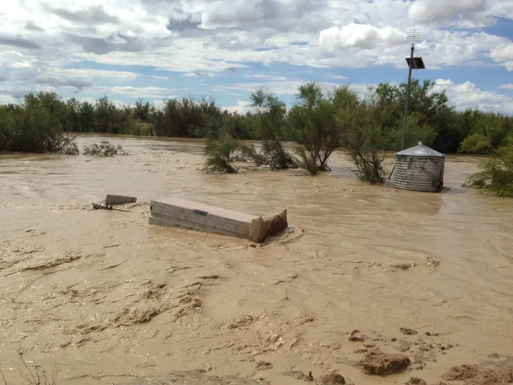
Lũ quét trong lòng suối khôUSGS, phạm vi công cộng.
Những dòng chảy tạm thời lưu lượng lớn, gọi là lũ quét, có thể di chuyển thành trên mặt đất hoặc dồn vào các (lòng khe khô) hay hẻm núi thường khô. Một lòng dẫn khô có thể nhanh chóng đầy một khối nước và mảnh vụn lao xuống arroyo và có thể tràn bờ. Lũ quét là yếu tố chính trong sự ở hoang mạc.
Nguy hiểm của lũ quét
Cơn bão gây lũ quét có thể ở cách xa nhiều dặm, ngoài tầm nhìn. Người đi bộ hoặc cắm trại trong những arroyo đã khô cạn hàng tháng, thậm chí hàng năm, đã bị cuốn trôi bởi lũ quét bất ngờ.
13.3.1 Cát
Hình ảnh quen thuộc về hoang mạc là một vùng cát mênh mông, nhưng về địa chất, hoang mạc được định nghĩa bởi sự thiếu nước. Những vùng khô hạn giống một biển cát là một kiểu hoang mạc gọi là (erg) (Hình 13.1). Biển cát gồm những hạt cát mịn, rời, thường bị gió (các quá trình ) thổi thành .
- Biển cát nổi tiếng nhất: Rub' al Khali ("Khu vực Trống rỗng") ở bán đảo Ả Rập.
- Ở Hoa Kỳ: Vườn quốc gia Great Sand Dunes (Colorado), Khu giải trí Little Sahara (Utah), Vườn quốc gia White Sands (New Mexico, là di tích quốc gia tới năm 2019) và một phần Vườn quốc gia Death Valley (California).
- Biển cát không chỉ có ở hoang mạc; chúng có thể hình thành ở bất cứ nơi nào có nhiều cát: xa về phía bắc tới Công viên tỉnh Athabasca Sand Dunes ở Saskatchewan, Canada, và thành biển cát ven bờ hồ, bờ biển ở Oregon, Michigan và Indiana.
Bên trong đụn cát có (Hình 13.22). Gió thổi lên sườn đón gió (stoss) thoải và mang cát tới đỉnh, đắp các lớp song song với sườn đón gió. Cát dồn lên đỉnh và tràn qua cho tới khi sườn khuất gió dốc (sườn trượt) đạt , góc dốc nhất mà cát rời còn đứng yên. Đụn cát không ổn định và di chuyển: cát bị xói khỏi sườn đón gió và tiếp tục đổ xuống sườn trượt, vùi lấp các lớp sườn đón gió và sườn trượt trước đó, tạo nên phân lớp xiên. Phần lớn bị tái tạo lặp đi lặp lại, nhưng đôi khi chúng được bảo tồn trong một vùng trũng rồi thạch hóa. Hướng gió thay đổi và nguồn cát dồi dào tạo nên những kiểu phân lớp xiên hỗn độn, như ở Vườn quốc gia Zion, Utah (Hình 13.23).

Trong Đại , Utah bị phủ bởi một loạt biển cát, dày nhất ở nam Utah, về sau thạch hóa thành (sa thạch) (Học phần 5 và 8):
- Sa thạch Navajo (): nổi tiếng nhất. Nó tạo nên những vách đá và tháp đá ấn tượng ở Vườn quốc gia Zion và phủ một phần lớn Cao nguyên Colorado.
- Sa thạch Entrada (cũng thuộc kỷ Jura): một loạt đụn cát muộn hơn phủ lên sa thạch Navajo rồi thạch hóa. Ở Vườn quốc gia Arches, sự bào mòn các lớp phía trên làm lộ ra những "vây" sa thạch Entrada và khoét đi phần yếu của chúng, tạo nên các vòm đá.
Cát có thể được tái chế. Khi chất xi măng gắn các hạt trong những vách sa thạch này bị phá hủy, các hạt được giải phóng tụ ở chân vách và theo các lòng suối khô đi xuống. Các biển cát Trung sinh có thể chứa cát thạch anh vốn phong hóa từ đá magma từ đầu và đã được tái chế nhiều lần. Công viên tiểu bang Coral Pink Sand Dunes ở tây nam Utah là một ví dụ: các đụn cát mới ở đây được tạo từ cát bị xói ra từ sa thạch Navajo (Hình 13.16).
Các kiểu đụn cát
Hình dạng đụn cát phụ thuộc vào hướng gió, nguồn cung cát và đôi khi thực vật giữ cát lại (Hình 13.24, Hình 13.25, Bảng 13.6).
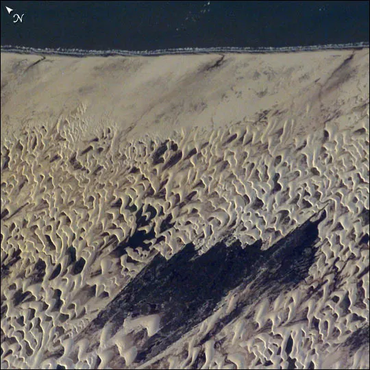
Đụn cát barchanVen biển Brazil. NASA, phạm vi công cộng. Đụn cát dọc (tuyến tính)Biển cát Lớn, Ai Cập. NASA Earth Observatory, phạm vi công cộng.
Đụn cát dọc (tuyến tính)Biển cát Lớn, Ai Cập. NASA Earth Observatory, phạm vi công cộng.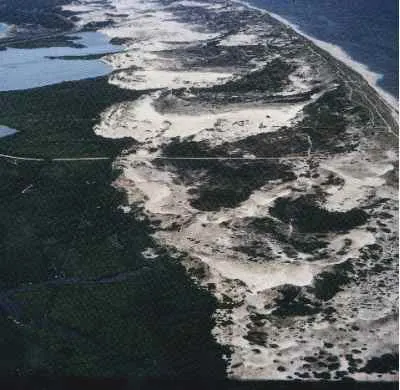
Đụn cát parabolCape Cod, Massachusetts. USGS, phạm vi công cộng.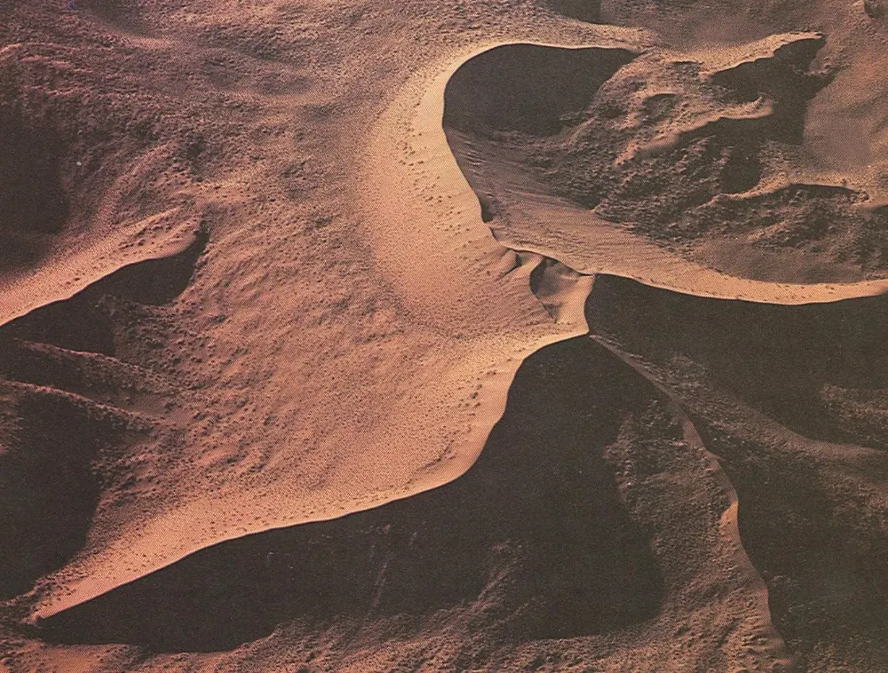
Đụn cát hình saoSahara. USGS, phạm vi công cộng.
| Kiểu | Nguồn cát | Gió | Hình dạng |
|---|---|---|---|
| Hạn chế | Hướng khá ổn định | Hình lưỡi liềm có hai cánh (sừng) hai bên đỉnh; di chuyển theo chiều gió, có thể vùi lấp nhà cửa, thậm chí cả thị trấn | |
| Nhiều hơn | Đổi chiều qua lại quanh một hướng chính | Những dải cao hàng chục mét, chạy theo hướng gió chính | |
| Thay đổi; thực vật giữ một phần cát | Một hướng chính | Giống barchan nhưng thường ngược lại; phần không được giữ bị thổi mòn. Hình dạng do thực vật quyết định hơn là một parabol đúng nghĩa | |
| Từ ít đến khá nhiều | Thay đổi, từ mọi hướng | Hình ngôi sao; hướng gió thay đổi tạo nên các cánh |
Tự kiểm tra: câu hỏi Mục 13.3 trong sách ↗
13.4Great Basin và Basin and Range
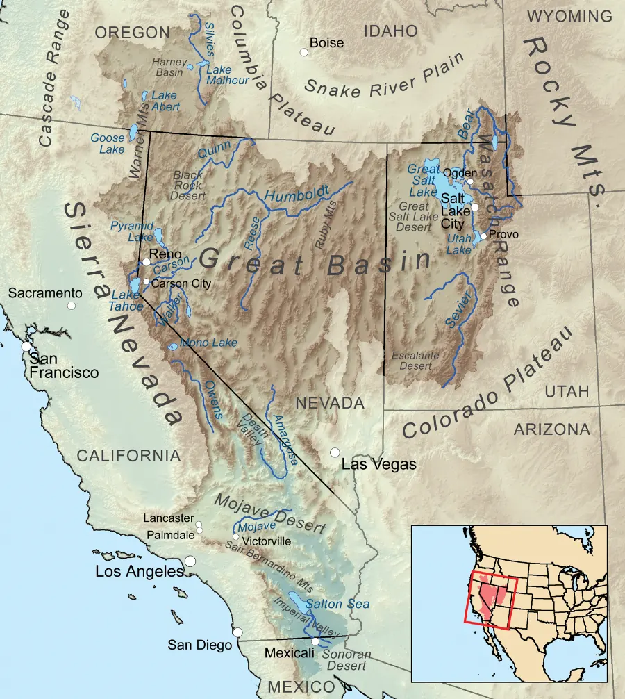
Nội lưu
Great Basin (Đại Bồn địa) là vùng : không có lối thoát ra đại dương, nên mọi lượng giáng thủy ở lại trong bồn hoặc bốc hơi. Các dòng chảy của nó đổ nước vào những hồ và playa trong bồn.
Vùng này phủ tây Utah, phần lớn Nevada và một phần đông nam California, nam Oregon và nam Idaho.
Một tiểu vùng của Great Basin là (vùng Bồn và Dãy), trải từ Wasatch Front ở Utah về phía tây qua Nevada tới dãy Sierra Nevada ở California. Các "bồn" và "dãy" của nó là và : những khối sụt xuống hoặc nâng lên dọc các khi vỏ Trái Đất bị kéo giãn do (Học phần 2 và 9; Hình 13.27). của cả vùng đã bị kéo dãn khoảng 2 lần trong khoảng 30 triệu năm qua: chiều rộng từ đầu này tới đầu kia đã tăng gấp đôi.
Mỗi thung lũng không có lối thoát là một bồn riêng, được lấp bằng trầm tích bồi tích dẫn ra một playa. Trong thời kỳ băng hà gần nhất, khí hậu ẩm hơn: trong khi sông băng phát triển ở một số dãy núi, các (hồ pluvial) phủ những vùng rộng lớn (Học phần 14). Hồ Bonneville phủ các thung lũng ở phần lớn tây Utah và đông Nevada. Khi khí hậu trở nên khô hạn sau thời kỳ băng hà, hồ Bonneville cạn dần, để lại Hồ Muối Lớn (Great Salt Lake) là phần sót lại.
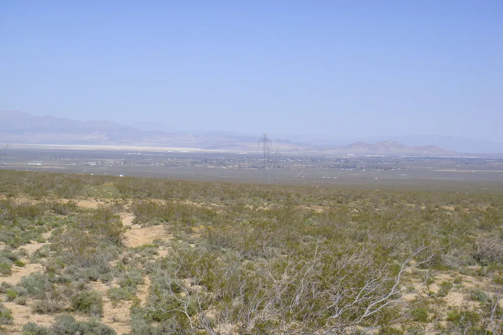
Hoang mạc Basin and Range, từ khoảng 35° tới gần 40° B, là một hoang mạc khuất mưa: gió tây từ Thái Bình Dương bốc lên và lạnh đi khi vượt dãy Sierra Nevada và mất hơi ẩm ở sườn tây, nên không khí tương đối khô giáng xuống khắp Nevada và tây Utah.
Một hành trình từ Wasatch Front về phía tây nam tới Thái Bình Dương cho thấy các giai đoạn phát triển cảnh quan hoang mạc ở Hình 13.20: núi khối đứt gãy với đỉnh nhọn và nón phóng vật ở cửa hẻm ở Utah; bajada dọc chân núi ở nam Nevada; và những núi sót thấp nhô lên giữa một biển bajada hợp nhất ở hoang mạc Mojave, California.
13.4.1 Hoang mạc hóa
(sa mạc hóa) là sự biến đổi đất trước đây canh tác được thành hoang mạc. Thực vật và đất giàu (Học phần 5) giúp nước thấm xuống () và được giữ lại. Khi một vùng trở nên khô hạn hơn, thực vật và đất của nó giữ nước kém đi, làm vùng đó càng khô hạn hơn: một vòng tự củng cố, làm hoang mạc mở rộng (Hình 13.29).
Các hoạt động của con người có thể gây hoang mạc hóa:
- Canh tác không bền vững
- Chăn thả gia súc quá mức
- Khai thác quá mức
- Biến đổi khí hậu toàn cầu (Học phần 15)
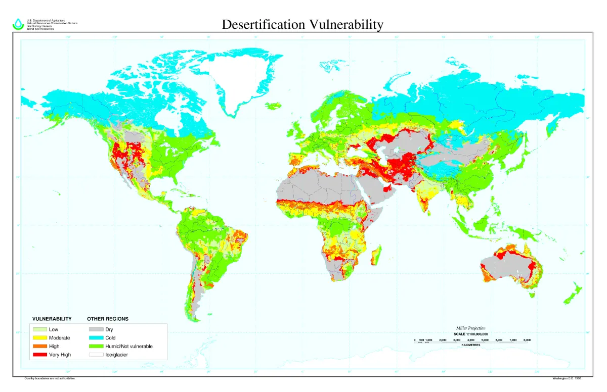
Hoang mạc hóa do con người là một vấn đề nghiêm trọng trên toàn thế giới. Ở Hình 13.30, hãy để ý các vùng đỏ và cam ở miền tây và trung tây Hoa Kỳ, bao gồm những vùng đất nông nghiệp rộng lớn dùng để trồng trọt và chăn nuôi. Thảm họa Bão Bụi (Dust Bowl) những năm 1930 (Học phần 5) là ví dụ kinh điển về một vùng rất dễ tổn thương bị hoang mạc hóa do con người. Như Dust Bowl cho thấy, tập quán canh tác và bảo tồn có thể mâu thuẫn. Hạn chế hoang mạc hóa mà vẫn để nông dân kiếm sống đòi hỏi giáo dục cộng đồng và cá nhân để tạo sự ủng hộ cho các phương thức nông nghiệp bền vững.
Tự kiểm tra: câu hỏi Mục 13.4 trong sách ↗
Tóm tắt
Khoảng 30% đất liền của Trái Đất là vùng khô hạn, và vị trí của hoang mạc do vĩ độ, hoàn lưu khí quyển và địa hình quyết định. Không khí giáng xuống trong các vòng hoàn lưu tạo nên các đới khô ở 15°–30° B và N (Sahara, Trung Đông) và các hoang mạc cực; núi tạo nên hoang mạc khuất mưa (miền tây Bắc Mỹ, Atacama, Gobi). Hiệu ứng Coriolis biến dòng khí bề mặt của các vòng thành gió tín phong và gió tây. Hoang mạc phong hóa chậm; nước vẫn gây phần lớn xói mòn, nhưng gió mang bụi ở dạng lơ lửng, cát theo kiểu nhảy cóc và hạt thô theo kiểu bò lăn, làm hạt cát mờ đục và mài nên yardang, đá gió mài. Dòng chảy rời núi đắp nón phóng vật, rồi bajada, cho tới khi chỉ còn núi sót; bồn kín chứa playa. Đụn cát hình thành trong biển cát; hình dạng của chúng tùy vào nguồn cát, gió và thực vật, và bên trong lưu giữ phân lớp xiên. Great Basin là vùng nội lưu, và Basin and Range của nó là vùng địa lũy, địa hào. Quản lý đất kém có thể gây hoang mạc hóa.
Ôn nhanh
- Hoang mạc = giáng thủy thấp, không phải nóng. Ba nhóm: cận nhiệt đới (15°–30°), khuất mưa, cực.
- Khuất mưa: không khí bốc lên và lạnh đi ở sườn đón gió (mưa, tuyết), giáng xuống và nóng lên ở sườn khuất gió (hoang mạc).
- Các vòng: Hadley (0°–30°), Ferrel (30°–60°), cực (60°–90°). Không khí giáng xuống ở 30° (vĩ độ ngựa) và ở cực → hoang mạc.
- Coriolis: lệch sang phải (B) và trái (N) → gió tín phong về phía xích đạo, gió tây ở vĩ độ trung bình.
- Atacama = vĩ độ + khuất mưa của dãy Andes + hải lưu lạnh Humboldt; nơi khô nhất ngoài vùng cực.
- Phong hóa chậm; vecni hoang mạc chỉ có ở hoang mạc. Lũ quét gây phần lớn xói mòn.
- Gió: lơ lửng (bụi → haboob, hoàng thổ), nhảy cóc (cát, hạt mờ đục, ≤ ~1 m), bò lăn (lăn).
- Cát mài: yardang (đá gốc), đá gió mài (đá rời); gió khoét hố thổi mòn.
- Nón phóng vật → bajada → núi sót; playa ở bồn kín; dòng chảy tạm thời trong arroyo.
- Đụn cát: cát lên sườn đón gió, sườn trượt ở góc nghỉ tự nhiên; phân lớp xiên = sườn trượt bị vùi. Barchan, dọc, parabol, hình sao.
- Great Basin: nội lưu. Basin and Range: địa lũy và địa hào; vỏ bị kéo dãn ×2 trong ~30 triệu năm; hồ Bonneville → Hồ Muối Lớn.
- Hoang mạc hóa: phản hồi dương, trầm trọng thêm do canh tác quá mức, chăn thả quá mức, khai thác quá mức nước dưới đất, biến đổi khí hậu.
Tự kiểm tra: câu hỏi ôn tập Chương 13 trong sách ↗
Tài liệu tham khảo
Ghi chú kiểm chứng
Mọi nội dung trong tài liệu đều lấy từ Chương 13. Các ghi chú dưới đây đánh dấu chỗ chương đơn giản hóa, có sai sót, hoặc khác với nguồn đáng tin cậy khác. Nơi chương sai, phần chính của tài liệu dùng nội dung đã sửa và lời văn của chương được ghi lại ở đây.
| Chương viết | Kiểm chứng |
|---|---|
| Atacama là "hoang mạc khô nhất Trái Đất" (phần tóm tắt), nhưng hoang mạc cực lại là "những hoang mạc khô nhất Trái Đất" (13.1.2), và phần mở đầu gọi Atacama là hoang mạc "khô nhất, ấm". | Chương tự mâu thuẫn. Atacama là hoang mạc khô nhất ngoài vùng cực; một số nơi ở châu Nam Cực, như các Thung lũng Khô McMurdo, còn khô hơn (Wikipedia, "Atacama Desert"). Tài liệu này viết "nơi khô nhất ngoài vùng cực". |
| Đá trượt được đẩy đi "bởi ma sát từ gió mạnh". | Đã sửa trong tài liệu. Những quan sát trực tiếp đầu tiên (Norris và cộng sự, 2014, PLOS ONE, được chương trích dẫn) cho thấy đá bị đẩy bởi những tấm băng mỏng nổi trên nước do gió nhẹ, khoảng 3–5 m/s. |
| Cơ chế hình thành vecni hoang mạc "vẫn chưa rõ". | Vẫn còn tranh luận, nhưng một nghiên cứu năm 2021 cho rằng vi khuẩn lam tích lũy mangan cung cấp mangan (Lingappa và cộng sự, 2021, PNAS, "An ecophysiological explanation for manganese enrichment in rock varnish"). |
| Yardang là "khối đá gốc lộ ra có hình dạng do cát mài", minh họa bằng một tảng đá đứng trên chân bị thắt hẹp. | Yardang điển hình là những sống đá thuôn dài song song với hướng gió thịnh hành (Wikipedia, "Yardang"). Tảng đá trong ảnh nên gọi là đá chân thắt (đá hình nấm), bị khoét ở nơi cát nhảy cóc dày đặc nhất sát mặt đất. Cả hai đều do cùng một quá trình cát mài. |
| Gió tách cát khỏi các hạt "cỡ bụi (≤70 µm)". | Gần đúng. Theo thang Wentworth (Học phần 5), ranh giới cát–bột là 1/16 mm = 62,5 µm. |
| "Di tích quốc gia White Sands". | Đã đổi tên: nơi này trở thành Vườn quốc gia White Sands từ tháng 12 năm 2019 (Cục Vườn quốc gia Hoa Kỳ). |
| Biển cát hình thành "xa về phía bắc tới 60° B" ở Athabasca Sand Dunes, Saskatchewan. | Các đụn cát Athabasca nằm ngay phía nam 60° B, khoảng 59° B. |
| Khoảng 30% "bề mặt Trái Đất" là khô hạn (phần tóm tắt). | Phần mở đầu viết 30% bề mặt trên cạn (đất liền), đó là cách hiểu đúng; hoang mạc không phủ 30% toàn bộ hành tinh, vốn phần lớn là đại dương. |
| Yếu tố Coriolis thứ hai "tạo ra độ lệch thực về phía xích đạo". | Đúng với khối di chuyển về phía đông; khối di chuyển về phía tây bị lệch về phía cực. Cả hai trường hợp đều lệch sang phải ở Bắc bán cầu. Phần chính bổ sung trường hợp hướng tây. |
| Hiệu ứng Coriolis tạo ra "các dòng tia cực ở trên cao". | Đơn giản hóa. Dòng tia chủ yếu do chênh lệch nhiệt độ giữa các khối khí; hiệu ứng Coriolis làm dòng đó quay về phía đông (NOAA JetStream, "The jet stream"). |
| Không khí bị hải lưu Humboldt làm lạnh là "siêu lạnh" (super-cooled). | "Siêu lạnh" thường chỉ nước lỏng dưới 0 °C. Chương muốn nói không khí bị làm lạnh mạnh nên giữ ít hơi ẩm; tài liệu này viết "bị làm lạnh". |
| Núi sót là "phần sót của núi bị chôn vùi". | Núi sót là phần vẫn còn nhô lên trên lớp mảnh vụn chôn vùi phần còn lại của ngọn núi; tài liệu diễn đạt theo cách đó. |
| Chương không nêu giá trị góc nghỉ tự nhiên. | Khoảng 34° với cát khô (Wikipedia, "Angle of repose"); hình đụn cát dùng giá trị này. Định nghĩa trong bảng thuật ngữ của sách ("lực cắt và lực pháp tuyến bằng nhau") lặp lại sai sót đã ghi ở Học phần 10; tài liệu dùng "góc dốc nhất mà vật liệu rời còn ổn định". |
| Lỗi chính tả: "circlustion", "Forces ting", "not outlet", "imbedded". | Đọc là: circulation; forces acting; no outlet; embedded. |
Nguồn & trích dẫn
Nội dung tóm tắt từ An Introduction to Geology, Chương 13, © 2017 Chris Johnson, Matthew D. Affolter, Paul Inkenbrandt và Cam Mosher, giấy phép CC BY-NC-SA 4.0. Tác giả và giấy phép của từng ảnh ghi ngay dưới ảnh.
- Vẽ cho tài liệu này theo mô tả của chương: vùng khuất mưa (theo hình của Bariot), các vòng hoàn lưu (theo hình hoàn lưu toàn cầu của NASA), sự lệch hướng gió do Coriolis, sự vận chuyển của gió (theo hoạt hình nhảy cóc của NASA), cấu tạo đụn cát (theo hoạt hình phân lớp xiên của USGS), các kiểu đụn cát, các giai đoạn cảnh quan hoang mạc, địa lũy và địa hào, và vòng hoang mạc hóa.
- Nguồn bên ngoài được ghi ở nơi sử dụng: NOAA JetStream (hoàn lưu toàn cầu), Norris và cộng sự (2014, PLOS ONE: đá trượt), Wikipedia ("Angle of repose", "Yardang"), Cục Vườn quốc gia Hoa Kỳ (White Sands), và các nguồn khác ghi trong phần kiểm chứng.